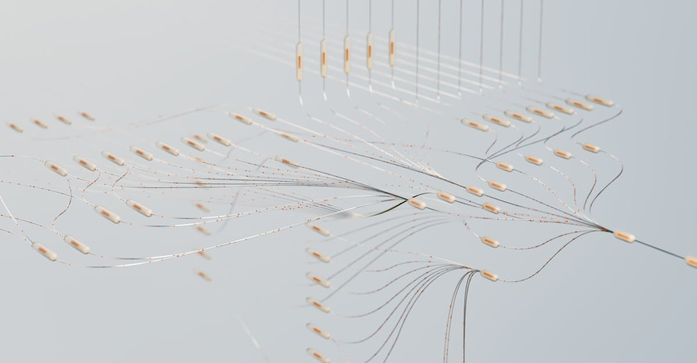
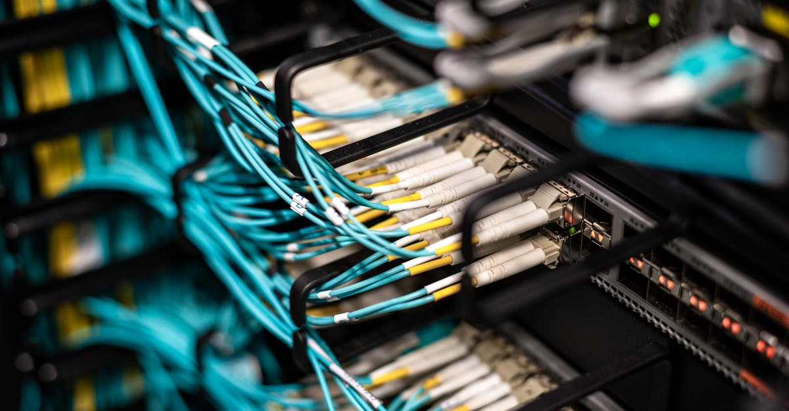

EQT réitère son intérêt pour Intertek : une offensive stratégique majeure
Le fonds d'investissement suédois EQT AB ne lâche rien. Après avoir vu deux propositions d'acquisition rejetées par le britannique Intertek Group Plc, spécialisé dans l'inspection, la vérification et la certification, EQT s'apprête, selon des sources proches du dossier relayées par Bloomberg, à soumettre une nouvelle offre, cette fois améliorée. Cette persévérance témoigne de la conviction du fonds quant à la valeur stratégique d'Intertek et à son potentiel de développement sous sa houlette. La société cible, dont la capitalisation boursière avoisine les 8 milliards de livres sterling, représente un actif de choix dans un secteur clé pour le commerce international et la réglementation. L'industrie des services aux entreprises, en particulier ceux liés à la qualité et à la conformité, est souvent perçue comme relativement défensive, mais aussi sujette à des consolidations lorsque des acteurs financiers ambitieux identifient des synergies ou des leviers de croissance inexploités. L'intérêt d'EQT, un géant du capital-investissement avec un portefeuille diversifié, suggère une vision à long terme pour Intertek, potentiellement axée sur l'optimisation des opérations et l'expansion géographique ou sectorielle. La question qui taraude désormais le marché est de savoir si cette offre améliorée parviendra enfin à convaincre le conseil d'administration d'Intertek, qui avait jusqu'à présent jugé les propositions initiales insuffisantes. Les détails financiers de cette nouvelle tentative restent pour l'heure confidentiels, mais l'histoire nous enseigne que dans ce type de négociations, la surenchère est souvent la clé. Cela pourrait également signaler une nouvelle ère pour les opérations de fusions-acquisitions (M&A), où les algorithmes et l'intelligence artificielle commencent à jouer un rôle de plus en plus prépondérant dans l'évaluation des cibles et la structuration des offres.
👉 À lire : Brésil : Le marché de la prédiction sous le feu des critiques

Intertek : un champion de la confiance à l'épreuve des OPA
Intertek Group Plc n'est pas une entreprise comme les autres. Fondée en 1883, elle s'est imposée comme un leader mondial des services d'assurance qualité, de contrôle et de certification. Son rôle est crucial dans la chaîne d'approvisionnement globale, garantissant que les produits, les systèmes et les services des entreprises respectent les normes internationales et réglementaires les plus strictes. Des biens de consommation aux produits pharmaceutiques, en passant par les infrastructures et l'énergie, Intertek appose son sceau de confiance, essentiel pour le commerce transfrontalier et la sécurité des consommateurs. Le refus des précédentes offres d'EQT n'est donc pas anodin. Il reflète une volonté de la direction d'Intertek de préserver la valeur intrinsèque de l'entreprise et de ne pas la céder à un prix jugé inférieur à son potentiel. Les dirigeants d'Intertek ont souvent mis en avant la croissance organique, l'innovation dans leurs services (notamment avec l'intégration croissante du numérique et de l'analyse de données) et l'expansion sur des marchés émergents comme moteurs de leur stratégie. Une acquisition par EQT, bien que potentiellement créatrice de valeur par des optimisations et des investissements ciblés, pourrait modifier cette trajectoire. Les fonds de capital-investissement sont réputés pour leur gestion active, cherchant à améliorer l'efficacité opérationnelle et à réaliser une plus-value lors de la revente. Pour les actionnaires d'Intertek, le dilemme est clair : accepter une offre lucrative maintenant, ou continuer sur la voie actuelle en espérant une appréciation future du titre, potentiellement plus lente mais peut-être plus pérenne. L'enjeu est de taille, car Intertek évolue dans un secteur où la réputation et la fiabilité sont primordiales. Une gestion trop agressive ou une restructuration malencontreuse pourrait ternir cette image patiemment construite au fil des décennies. La question de la valorisation est centrale : quelle est la juste valeur d'un tel garant de confiance dans un monde de plus en plus complexe et réglementé ?
👉 À lire : Marchés : Analyse Post-Crise, Opportunités IA
Le rôle croissant de l'IA dans l'analyse financière et les opérations de M&A
L'offensive d'EQT sur Intertek, si elle aboutit, s'inscrit dans un contexte financier où l'intelligence artificielle (IA) redéfinit les règles du jeu. Bien au-delà du trading algorithmique où des agents IA comme ceux que nous développons chez ForexBot AI opèrent 24h/24 sur les marchés des devises, l'IA s'immisce désormais dans les processus d'investissement les plus complexes, y compris les fusions-acquisitions. Les fonds d'investissement, y compris les plus traditionnels comme EQT, investissent massivement dans des outils d'analyse basés sur l'IA pour identifier des cibles potentielles, évaluer leurs valorisations, anticiper les synergies et même modéliser les risques post-acquisition. Ces technologies permettent de traiter des volumes de données considérablement plus importants et plus variés que ne le pourrait une équipe humaine, incluant des données financières publiques et privées, des informations sectorielles, des signaux macroéconomiques, voire des analyses de sentiment sur les réseaux sociaux. L'IA peut aider à repérer des opportunités d'arbitrage, à optimiser la structure de financement des opérations, et à prédire avec une meilleure précision les performances futures d'une entreprise acquise. Pour un fonds comme EQT, l'utilisation de l'IA dans la due diligence et la négociation peut représenter un avantage concurrentiel décisif. Cela permet de réduire le temps nécessaire à l'évaluation, d'affiner les arguments lors des négociations et d'identifier des pistes d'amélioration opérationnelle souvent invisibles à l'œil nu. On peut imaginer que des algorithmes aient déjà analysé la structure d'Intertek, identifié des segments sous-performants ou des opportunités de croissance spécifiques, et que l'offre d'EQT soit le fruit de ces analyses poussées. Cette tendance ne fait que s'accélérer, et l'on peut se demander si, à terme, les décisions d'investissement majeures ne seront pas de plus en plus pilotées par des algorithmes sophistiqués, complétant ou même remplaçant l'intuition humaine. Le parallèle avec le trading Forex est frappant : là où l'IA permet d'agir sur des marchés volatils avec une réactivité et une précision inégalées, elle offre dans le M&A une capacité d'analyse et de prédiction d'une profondeur inédite.

L'impact potentiel sur le secteur des services aux entreprises
Si l'acquisition d'Intertek par EQT se concrétisait, les répercussions pourraient être significatives pour l'ensemble du secteur des services d'inspection, de vérification et de certification (IVC). Ce marché, estimé à plusieurs dizaines de milliards de dollars à l'échelle mondiale, est déjà marqué par une consolidation progressive, avec quelques grands acteurs internationaux dominant le paysage, aux côtés d'une multitude d'entreprises spécialisées et régionales. Une opération de cette ampleur, menée par un fonds d'investissement majeur, pourrait relancer une vague d'autres transactions. D'autres fonds pourraient être incités à chercher des cibles similaires, tandis que les concurrents directs d'Intertek pourraient se sentir sous pression pour renforcer leur propre position, soit par croissance interne, soit par acquisitions. EQT pourrait chercher à intégrer Intertek dans son portefeuille existant d'entreprises technologiques et de services, en y injectant des solutions numériques innovantes ou en l'utilisant comme plateforme pour acquérir d'autres acteurs plus petits. L'accent mis sur l'efficacité opérationnelle, souvent une priorité pour les fonds de Private Equity, pourrait conduire à des changements dans la manière dont les services IVC sont délivrés. On pourrait assister à une standardisation accrue des processus, à une automatisation plus poussée de certaines tâches d'inspection ou de reporting, et à une utilisation plus intensive de l'analyse de données pour améliorer la qualité et réduire les coûts. Pour les employés d'Intertek, cela pourrait signifier des changements organisationnels, voire des réductions d'effectifs dans certains départements jugés redondants. Cependant, cela pourrait aussi ouvrir de nouvelles opportunités, notamment pour les profils spécialisés dans l'analyse de données, la cybersécurité ou le développement de logiciels, des compétences de plus en plus essentielles dans ce secteur. L'innovation, souvent accélérée sous l'impulsion des fonds d'investissement, pourrait bénéficier à l'ensemble de l'écosystème, en poussant les acteurs à adopter de nouvelles technologies pour rester compétitifs. Le secteur IVC, déjà en pleine transformation digitale, entrerait ainsi dans une nouvelle phase de son évolution.
La psychologie de l'investisseur face aux OPA : entre prudence et opportunisme
L'actualité autour d'EQT et Intertek nous rappelle une constante des marchés financiers : la tension permanente entre la prudence des investisseurs et leur appétit pour l'opportunité. Lorsqu'une offre d'acquisition est annoncée, surtout lorsqu'elle représente une prime significative par rapport au cours de bourse actuel, la réaction initiale est souvent positive pour le titre de la cible. Les actionnaires voient là une occasion de réaliser une plus-value rapide. Cependant, le processus d'acquisition est rarement une ligne droite. Les négociations peuvent s'éterniser, des conditions suspensives peuvent apparaître, et il arrive que les offres soient retirées ou revues à la baisse. C'est là que la psychologie de l'investisseur entre en jeu. Faut-il vendre immédiatement pour sécuriser le profit, ou conserver ses titres en anticipant une surenchère ou une issue favorable ? La décision dépend de nombreux facteurs : la confiance dans le management de la cible, la solidité financière de l'acquéreur, les conditions macroéconomiques générales, et bien sûr, la perception du potentiel futur de l'entreprise si elle reste indépendante. Dans le cas d'Intertek, le refus des premières offres suggère que le management estime que l'entreprise vaut plus que ce qui a été proposé. Cela peut encourager les actionnaires à garder leurs titres, espérant qu'EQT sera contraint de monter significativement son offre pour emporter l'adhésion. Inversement, certains pourraient préférer encaisser un gain certain plutôt que de parier sur une issue incertaine, surtout dans un environnement économique potentiellement volatil. Cette dynamique crée des opportunités, mais aussi des risques. Pour les traders actifs, notamment ceux qui utilisent des stratégies automatisées comme celles basées sur l'IA, ces périodes d'incertitude et de spéculation autour des OPA peuvent être particulièrement intéressantes. La volatilité accrue générée par ces événements peut être exploitée pour générer des profits rapides, à condition de disposer des outils d'analyse et de réactivité adéquats. L'IA, en traitant l'information en temps réel et en exécutant des ordres basés sur des critères prédéfinis, peut offrir un avantage significatif dans ces contextes de marché mouvementés, bien plus que sur le marché des devises où elle est traditionnellement appliquée.

Perspectives et leçons pour le trading automatisé
L'affaire EQT-Intertek, bien que relevant du domaine des fusions-acquisitions et non du trading de devises au sens strict, offre des enseignements précieux pour les adeptes du trading automatisé par IA, comme ceux qui utilisent les solutions de ForexBot AI. Premièrement, elle illustre l'importance cruciale de l'analyse de données. L'IA, qu'elle soit appliquée à l'évaluation d'une entreprise cible pour une OPA ou à la prédiction des mouvements sur le marché du Forex, repose sur la capacité à traiter et interpréter d'énormes volumes d'informations. La décision d'EQT de relancer Intertek est probablement le résultat d'analyses complexes intégrant des données financières, sectorielles et stratégiques. De même, nos agents IA analysent en continu des milliers de points de données sur les marchés des devises pour identifier les opportunités de trading les plus prometteuses. Deuxièmement, cette situation met en lumière la nécessité d'une stratégie claire et d'une exécution rigoureuse. Que ce soit pour un fonds d'investissement visant à acquérir une entreprise ou pour un trader cherchant à maximiser ses profits sur le Forex, la discipline est essentielle. L'IA excelle dans l'exécution sans émotion, respectant scrupuleusement les paramètres définis, ce qui est un avantage considérable par rapport à l'investisseur humain sujet aux biais psychologiques. Troisièmement, l'adaptabilité est la clé. Les marchés financiers, qu'il s'agisse des actions, des obligations ou des devises, sont en constante évolution. Les stratégies qui fonctionnent aujourd'hui ne seront peut-être plus efficaces demain. L'IA, grâce à ses capacités d'apprentissage continu, peut s'adapter à ces changements plus rapidement que les méthodes traditionnelles. L'histoire d'EQT et d'Intertek nous montre que même dans des secteurs apparemment éloignés du trading, les principes d'analyse approfondie, de stratégie bien définie et d'exécution disciplinée sont universels. Les outils basés sur l'IA, comme notre Agent IA qui trade le Forex pour vous 24h/24, incarnent cette fusion entre l'analyse de données avancée et l'exécution automatisée, offrant une approche moderne et potentiellement plus performante pour naviguer dans la complexité des marchés financiers contemporains. La capacité à identifier des tendances, à évaluer des risques et à agir rapidement est fondamentale, que l'on vise à acquérir une entreprise ou à générer des profits sur le marché des changes.
Conclusion
L'affaire EQT-Intertek est bien plus qu'une simple négociation financière ; elle est le reflet des transformations profondes qui animent le monde de l'investissement et des affaires. La persistance d'EQT, l'évaluation stratégique d'Intertek et l'ombre grandissante de l'intelligence artificielle dans les processus décisionnels dessinent les contours d'un paysage financier en pleine mutation. Pour les acteurs du marché, qu'ils soient fonds d'investissement, dirigeants d'entreprise ou traders individuels, l'heure est à l'adaptation. L'IA n'est plus une technologie futuriste réservée à quelques pionniers ; elle devient un outil indispensable pour analyser, anticiper et agir. Chez ForexBot AI, nous croyons fermement au potentiel de l'IA pour démocratiser l'accès à des stratégies de trading performantes. Notre Agent IA, conçu pour opérer sur les marchés du Forex 24h/24, incarne cette vision : tirer parti de la puissance de l'intelligence artificielle pour naviguer dans la complexité et la volatilité des marchés financiers, avec discipline et efficacité. L'histoire d'EQT et d'Intertek nous rappelle que, quelle que soit la stratégie – acquisition d'entreprise ou trading de devises – la capacité à traiter l'information, à évaluer les risques et à exécuter une stratégie avec rigueur est la clé du succès. L'avenir appartient à ceux qui sauront intégrer ces nouvelles technologies pour repousser les limites de la performance.